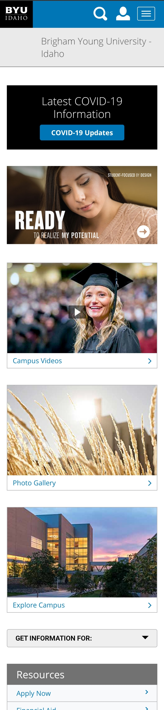
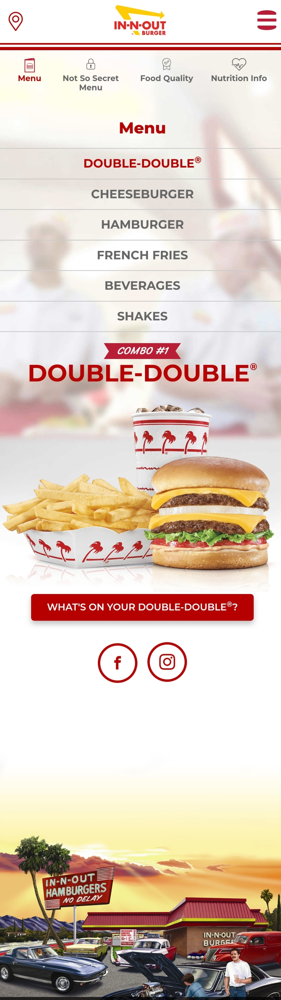

PARC: Contrast

https://www.littlecaesars.com/
About two or three times a week my kids as for pizza instead of food for dinner. Sometimes I comply. I have noticed Little Ceasar's website in the past because of the sharp contrasts they employ.

White Space and Clean Design
I have been an online student at BYUi for nearly four years and can say that I have watched the website morph from something that was cumbersom and hard to navigate, into something that really is pleasing to view and easy to use. The white space is abundant but contrasted nicely with the school blue with blacks and grays used to highlight important areas.
Hick's Law
When I think of simplicity in design and streamlining choices, I always think of In-N-Out Burger. They have intentionally kept their menu small over the years so that people can order quickly and get quality food quickly. They even have a secret menu you're not allowed to order from unless you already know what's on it. I was pretty sure if I visited their website, I would find a similar style of simplicity in design and choices.
